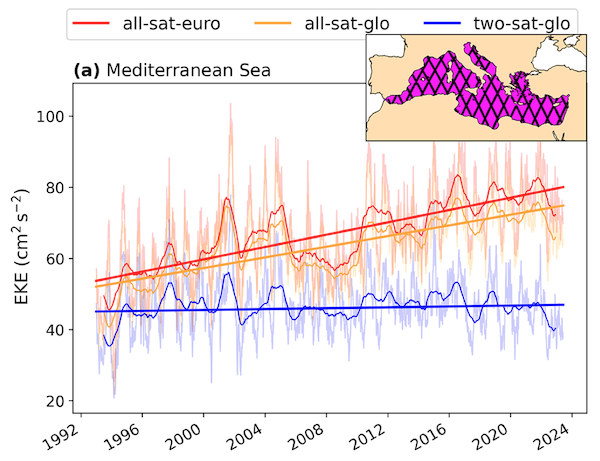

Submitted
[2] Hayward, A., Dasgupta, N., McAdam, R., Payne, M. R., Raj, R. P., Bonino, G., Chatterjee, S., Combes, V., Denaxa, D., De Rovere, F., Englyst, P., Haapaniemi, V., Hargous, P., H{\o}yer, J., Joseph, K. A., Lopes, B., Oliveira, A., Paix\~ao, J., Silva, F. , Surendran, S., Zegna-Rata, A. and Olsen, S. (in review): Marine Heat waves – Multiple Analysis / Definitions (MHW-MAD): A Multi-Definition Global Marine Heatwave Dataset from Satellite Sea Surface Temperature data.
Published
2026
[1] Hargous, P., Combes, V., Barceló-Llull, B. and Pascual, A.: Eddy kinetic energy variability from 30 years of altimetry in the Mediterranean Sea. Ocean Sci., 22, 549–564, 2026 DOI [PDF] ▶
Abstract
Mesoscale activity plays a central role in ocean variability, substantially influencing the mixing of biogeophysical tracers, such as heat and carbon, and driving changes in ecosystems. Eddy Kinetic Energy (EKE), a metric used for studying the intensity of mesoscale processes, has recently been shown to increase in regions of intense EKE worldwide. Strong EKE positive trends are observed, for example, in the principal western boundary current regions, such as the Gulf Stream, Kuroshio Extension, and the Brazil/Malvinas Confluence. In this study, we assess whether the Mediterranean Sea, known to be a hotspot for climate change impacts, also exhibits such intensification. Despite the high number of observational data and modeling experiments, there is a gap in understanding the long-term evolution of mesoscale dynamics and EKE trends in the Mediterranean Sea. This study investigates EKE trends in the Mediterranean Sea using daily geostrophic currents derived from satellite altimetric data. To test the robustness of the results, we compare EKE trends computed from three different gridded altimetric products: a global product derived from a stable two-satellite constellation (two-sat) and two other products (global and European) incorporating all available satellites (all-sat). While all products reveal a general increase in EKE in the Mediterranean Sea over the last three decades, the trends calculated from the two-sat product are significantly smaller than those computed from the all-sat products. We show that this discrepancy is strongly linked to the increasing number of satellites over time used to construct the all-sat data sets, which enhances both spatial and temporal coverage, and hence, their capacity to detect higher energy levels. To evaluate the fidelity of these gridded products in capturing EKE trends, we compare them with along-track data in high-energy regions of the Mediterranean Sea: the Alboran Sea and the Ierapetra area. These regions exhibit contrasting EKE trends: positive in the Alboran Sea and negative in the Ierapetra area. These findings highlight the importance of using altimetric products with a stable number of satellites constructed for climate applications when addressing long-term ocean variability analysis.
